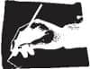

Berbat bir gün geçirdi zavallı Uçuk. Bu damda bir berbat günler vardır, bir de o-kadar-berbat-olmayan günler. Sonra bir de üstünden-tren-geçmiş günler. Adına rağmen bu sonuncular en kötüsü değildir. Üstünden-tren-geçmiş günler, aşırı yorgunluktan uyuyamadığın gecelere benzer. Öyle zamanlarda bitkisel hayata girer, hiçbir şey yapamaz, hissedemez, düşünemezsin. Odun gibi cansız. Moralin bozuk olsa da fark etmeyecek kadar donmuşsundur. Birileri elinden tutar ya da kimse tutmaz. Her iki durumda da umursamazsın. O-kadar-berbat-olmayan günlerse idare eder sayılır. En beteri berbat günlerdir – insanın canını acıtan, ruhunu yaralayan.
Takvim yetersiz bir icat. Dedikleri gibi zaman uçup gidiyorsa eğer, uçuş hızı hep aynı değil ki. Keşke haftanın her gününü ayrı değerlendirmenin bir yolu olsaydı. Mesela o-kadar-berbat-olmayan bir günü beyaza boyar, bir puan verirdik. Üstünden-tren-geçmiş günler kırmızı ve iki puan olurdu. Berbat bir gün de siyah ve üç puan.
Bu hesaba göre peş peşe otuz berbat gün geçiren bir adam, o-kadar-berbat-olmayan günlerle dolu bir ay geçiren birine nazaran üç kat ağır yaşar. Böyleleri bir senede üç sene yaşlanır. Bana gelince, buraya geldiğimden beri o kadar çok berbat günüm oldu ki takvim yapraklarım siyaha boyanmış halde. Annemin gözlerine çektiği sürmeler gibi kapkara.
Uçuk'un karısı boşanmak istiyor. Bunun er ya da geç olacağını Uçuk da, ben de, bu çöplükteki herkes de biliyordu ama yine de hayret ettik. Bizim buralarda vaka-i adiyeden sayılır bunlar. Hapse düşmüş adamı karısı boşar, sevgilisi bırakır. Ama Uçuk'un gururu incinmesin diye hepimiz şaşırmış gibi yaptık. Arkadaşının, karısı tarafından terk edildiğini duyduğun zaman tutup "Eh, biliyordum zaten bunun eninde sonunda böyle olacağını" demezsin. Bu onun kendini enayi gibi hissetmesine neden olur. Oysa "Hadi ya, inanmıyorum, ne zaman oldu?" gibi şeyler söylersen ahbabının acısını paylaşmış olursun. Onu ezmeden.
Kızıl saçlı, kireç gibi beyaz tenli, kolları çillerle kaplı, incecik bir kadındı; yüzünde sonsuz bir sabır ifadesi vardı. Yalan tabii. Hiç kimsenin sabrı sonsuz olamaz. Hep meyveli kek getirirdi Uçuk'a ama gardiyanlar nadiren izin verirdi içeri sokmasına. Olsun, o pişirmeye devam ederdi.
Bugün gelip kendisi söyledi Uçuk'a. Hakkını vermek lazım. Basit bir not gönderebilirdi, bazı eşler o kadarını bile yapmıyor. Ama o kalkıp geldi ve sigaradan boğuklaşmış sesi ve kül tadında laflarla anlattı durumu. Biriyle tanıştığını itiraf etti. Çocukların, bilhassa beş yaşındaki oğullarının bir baba figürüne ihtiyacı olduğundan dem vurdu. "Ama evlatların her zaman seni ziyaret ederler, onların babası sensin. Bunu hiçbir şey değiştiremez." Sonra Uçuk'u son bir kez öpüp son bir meyveli kek bırakarak çıkıp gitti. Güm!
İnsanın bir karısı olması nasıl bir şey acaba diye düşünürüm sık sık. Zaaflarını, zavallılıklarını senden iyi bilen ama yine de seni olduğun gibi seven bir kadın. Bunun nasıl bir şey olduğunu bilmemek kahreder beni. Kimseye belli etmem.
Oğlumun ismi Tom. Beni hiç görmedi, ben de onu. Bugün bir başka adama "baba" diyor oluşuna üzülmüyorum. Benden feci bir baba olurdu zaten. Feci baba insanın boğazına takılı kılçık gibidir. Ne tükürüp atabilirsin, ne yutup sindirebilirsin. Bir şekilde kurtulsan bile geride bir iz kalır mutlaka, dışarıdan bakanların göremediği ama senin hep hissettiğin bir çentik etinde. Feci baban olacağına hiç olmasın daha iyi.
Bir keresinde anneme babamla neden evlendiğini sordum. Birbirlerini sevip sevmediklerini anlamak için.
"Ben varmadım ona" dedi.
"Eh, o zaman o sana vardı" diye ısrar ettim.
Dönüp yüzüme baktı. Pencereden gelen ışık yeşil gözlerindeki harelere vuruyordu. Kehribar ve altın rengiydi hareler. Ne kadar güzel olduğunu düşündüm. Ve genç. İnsan annesinin güzelliğini pek fark etmez. Ama ben o gün bunu açık ve net gördüm. Huzursuz oldum.
"O zamanlar dünya farklıydı" dedi. "Senin şimdiki hayatınla alakası yoktu. Siz gençler öyle şanslısınız ki. Kıymetini bilmiyorsunuz."
Duymak istediğim cevap bu değildi. İnsan istiyor ki anası ile babası birbirini çok sevmiş olsun. Hiç olmazsa ilk başta. Oysa bizimkilerde yoktu böyle şeyler. Ne adlarının baş harfleri işlenmiş ipek mendiller. Ne kalp çarpıntıları. Ne kaçamak fısıldanan yeminler. Ana babamın geçmişinde aşkın kırıntısı dahi yoktu. Esma biliyordu bunu. Hiçbirimizin aşk çocuğu olmadığının farkındaydı. Bizim varoluşumuzun yalnızca görev, teslimiyet ve kayıtsızlık sonucu olduğunu söylerdi. Benim itaatsiz, onun isyankâr, Yunus'unsa duygusal oluşunun nedeni buydu.
Esma'yla konuşur, dertleşirdik hep.
"Şu çeneniz hiç durmuyor" derdi annem. "Dışarıda yağmur dinmek bilmiyor, içeride sizin gevezelikleriniz!"
Esma'ya anlattığım bazı şeyler var ki hiç kimseyle paylaşmadım şu hayatta – ne bizim çocuklarla ne Kate ile. Sade ben değil, ailede herkes ona açılırdı galiba. Sözlerimizi ciddiye alacağına inanır, içimizi dökerdik.
Kız kardeşime anlatırdım, çünkü beni anlardı. Sözcüklerle arası iyiydi. Hem her şeyi kavrayacak kadar bizden, hem her şeyin dışında kalabilecek kadar yabancı tek o vardı. Ailenin kara koyunuydu. Hoşuma giderdi bu – 1978 sonbaharına kadar. Sonra birden bir şeyler koptu ve bir daha Esma ile konuşmaz oldum.
* * *
Öğleden sonrayı ölüm sessizliği içinde geçiriyor Uçuk. Yüzünün rengi üç günlük lapaya benziyor. Ziyaretçi salonunda metanet gösterisi yaptı. Karısına onu gayet iyi anladığını söyledi, hayatta her şeyin gönlünce olmasını diledi. Nema problema! Bunca yıl bu kadar müşfik ve cömert davrandığı için teşekkür etti. Sonra gardiyana görüşmenin bittiğini işaret edip kapıya kadar geçirdi karısını. Ayrılırken meyveli keklerini özleyeceğine dair şaka bile yaptı.
Şimdi sırtını duvara vermiş oturuyor; çenesi kenetlenmiş, gözleri sabit. Hakikat nihayet dank etti kafasına; karısının kendisini arkadan bıçaklayan taş kalpli bir kaltak olduğunu düşünüyor. İnsan doğası böyle işte, en çok nefret ettiklerimiz en fazla sevdiklerimiz oluyor hep.
"Allah belasını versin" diyor Uçuk.
"Aldırma, bu da geçer."
"Bok geçer."
Başka taktik deniyorum. "Sen hep demez misin dışarıda bir sürü perişan insan dolaşıyor diye? Herkesin derdi var."
Uçuk'un umurunda değilim. "Eminim o herifle yatıyordur" diyor, "ister misin o geri zekâlıdan çocuk yapsın?"
"Ner'den çıkarıyorsun?"
"Biliyorum işte" diye bağırıyor.
Sinirle ayağa fırlayıp volta atmaya başlıyor. Gözü Houdini posterine takılıyor. Bir an posteri indirip paramparça edecek sanıyorum. Ama yapmıyor. Onun yerine mahzun bir ifade iniyor yüzüne. Derken aniden öne atılıyor ve yumruğunu bütün gücüyle geçiriyor duvara.
Çıkan ses yüksek, tok ve mide bulandırıcı. Birden aklıma geçmişte yaşanmış bir an geliyor. Babamla ben. Sokaktaydık, bir kulübün önünde kavga ediyorduk. Burun delikleri açılıp kapanıyor, gözleri öfkeyle parlıyordu – yoksa ben miydim patlayan? Tepem atmıştı; kafadan girdim duvara. Tekrar tekrar vurdum. Koşarak geldi insanlar; kulübün fedaisini hiç unutmuyorum.
Bir sonraki gümlemeyle kendime geliyorum. Müdahale etmeye çalışıyorum ama Uçuk öyle sert itiyor ki sırtüstü düşüyorum. Ben kollarını tutup sakinleştirene kadar defalarca vuruyor duvara.
"Yeter, bütün gardiyanları toplayacaksın başımıza. Duyuyor musun?"
Yumrukları kan içinde, soluk soluğa. Kafasını dirseklerimin arasında tutarak yatışmasını bekliyorum.
"Boş ver ya" diyorum.
"Sen ne anlarsın?"
"Anlarım."
"Acımı bir şeyden çıkarmak zorundayım" diyor.
"Sana bir kum torbası bulalım o zaman."
Uçuk ses etmiyor. Aklından geçenleri biliyorum. Torba işe yaramaz. Cansız, donuk, dilsiz. Yumruğun altındaki eti hissetmek istiyor o, kemiklerin çatırtısını duymak. Hapiste olmasaydı bu gece bir bara gider, sünger gibi içer ve şöyle okkalı bir kavgaya girerdi. Sıska herifin teki olduğu için de muhtemelen eşek sudan gelinceye dek marizlenirdi. Ama olsun, bu ona ertesi gün dalga geçecek malzeme sağlardı. Dayanacak bir şey olurdu.
Kafasını geriye itip gözlerine bakıyorum. "Bana vur."
"Ne?" diye soruyor sesi çatlayarak.
"Şşş, bağırma..." diyorum. "Ben boksörüm. Unuttun mu?"
Yüzündeki hayret ifadesinin akıp gitmesini seyrediyorum. "Kafayı yemişsin" diyor ve gülüyor ama ikimiz de bunun evet demek olduğunu biliyoruz.
Bir delilik geliyor üstüme. Tişörtümü çıkarıp atıyorum. Derin bir nefes alıp bırakıyorum. Nefes al, nefes ver, nefes al, nefes ver...
Omuzlar aşağıda, karın içeride, ellerim yumruk, kaslarımı sıkıyorum. Bir mesafe olmalı. Düşmanınla senin aranda, yediğin darbeyle iç organlar arasında, bireyle toplum arasında, geçmişle bugün arasında, anılarla vicdan arasında... Bu hayatta yaptığın ya da hissettiğin her şeyde bir mesafe olmalı. Mesafe seni korur. Sıkı bir yumruk yemenin püf noktası, mesafeyi nasıl yaratacağını bilmektir.
Bu arada Uçuk, anlamadığı bir şeyle karşılaştığında hep yaptığı gibi tek kaşını kaldırmış beni seyrediyor.
"Eee? Ne bekliyorsun tırsak herif?" diyerek kışkırtıyorum onu.
İlk yumruk biraz dengesiz geliyor, çaprazlama. Benden çok onun canı yanmış olmalı. Uzun ve pes bir ıslık çalıyorum.
"Ne?" diye soruyor Uçuk, gayet gergin.
"Hiç" diyorum, pis pis sırıtarak.
İnsanların ona sırıtmasından nefret eder Uçuk. Elinde değil. Kanı tepesine sıçrar. Aslına bakarsanız bu delikte kimsenin sırıtışlardan hazzettiği söylenemez.
Karın kaslarım sıkıdır. Ama bir sonraki darbe beklediğimden sert. Göğüs kafesimin altına saplanıp çıktığını hissediyorum. Kuvvetine kendi de şaşıran Uçuk durup bana bakıyor.
Başka bir hatıra düşüyor aklıma. Annemin beni İstanbul'da hamama götürüşünü hatırlıyorum. Altı yaşında olmalıydım. Buhar, sıcak, her yanda çıplak kadın bedenleri, sarkık memeleriyle bir nine. Dehşete kapılıp dışarı kaçmıştım. Annem yakalayıp sertçe silkelemişti beni.
"Nereye?"
"Sevmedim burayı. Eve gidelim."
"Ulan ödlek herif, ben sana boşuna mı sultan diyorum?" demişti. "İstersen çıtkırıldım diyeyim onun yerine."
Mesafe. Anamın hatırasıyla arama mesafe koymalıyım. Yoksa delireceğim.
Sırıtıyorum yine. "Hadisene çıtkırıldım herif!"
Uçuk'un sonraki yumrukları daha kuvvetli ve kararlı. Yapılı bir adam sayılmaz ama hanım evladı değil. Bir av köpeğini çağrıştırıyor – zayıf, incecik, vücudunda bir dirhem yağ yok, ama inatçı ve amansız.
Bu şekilde epeyce devam ediyoruz. Bir noktada kendini kaptırıp çeneme bir tane patlatsa da, genelde aynı noktaya çalışıyor Uçuk. O kasın altında bir yerde kıvrılmış uyuyan apandisim var – gereksiz bir organ. Hiçbir işe yaramaz, ama Houdini'yi öldürmeye yetti.
Üst üste vuruyor Uçuk. Birkaç dakika sonra koridor sonundaki demir kapılar açılıyor, ışıklar yanıyor. Belli ki çıkan kargaşadan hoşnut, kıs kıs gülüyor birileri yakında bir hücrede. Gardiyanlar geliyor koşarak. Kavga ettiğimizi sanıp dalıyorlar içeri. Vaziyetin öyle olmadığını ispatlamak için kolunu boynuma doluyor Uçuk. Biz arkadaşız, diyor. Gururla sırıtıyor. Hata halbuki. Sırıtış yani. Dedim ya, buralarda kimse sevmez diye.
Biz daha ne olduğunu anlayamadan bağırtılar, küfürler, tehditler alıp yürüyor. Gardiyanlar itip kakıyor bizi. Bir otorite tiyatrosu oynanıyor. Uçuk ve ben gece mutfakta yakalanan hamamböcekleri gibi siniyoruz.
"Yahu, yanlış anladınız. Kavga etmiyorduk ki" diye bağırıyor Uçuk avazı çıktığınca.
"N'apıyordunuz o zaman?" diye soruyorlar. "Dans mı ediyordunuz? Yumruk yumruğa!"
Bir an kafası karışan Uçuk soran gözlerle bana bakıyor. "Sahi n'apıyorduk be?"
Ertesi sabah Memur Andrew uğruyor, köpek yavrusu gibi yanından ayrılmayan kibriyle. İşe alıştı ama bana alışamadı. Dün geceyle ilgili raporları okumuş ve öyle durup dururken kavgaya girişilmeyeceğine göre mutlaka uyuşturucu almış olduğumuza karar vermiş. Zula aramak bahanesiyle adamlarına hücrenin altını üstüne getirmelerini emrediyor – kitaplar, battaniyeler, Uçuk'un çocuklarının fotoğrafları, benim defterim, hatta döşeklerimizin içi bile aranıyor.
Uçuk gülmemek için yanaklarının içini ısırıyor. İkimiz de aynı şeyi düşünüyoruz. Mucizevi bir şekilde temiz hücre. Birkaç gün önce yapmış olsalardı bu aramayı, üç beş mal bulurlardı. Ama bugüne bir şey kalmadı. Endişeye mahal yok.
Tam gitmek üzereyken Memur Andrew duruyor. Elinde bir şey var. "Bu ne?"
Bir kartpostal. Lunaparkta bir atlıkarınca. Fotoğrafta hiç kimse yok, yalnızca tahta atlar, arkada ışıklar ve rüzgârla savrulan kırmızı bir balon.
"Sizi duyamıyorum!" diyor Andrew.
Ne Uçuk yanıt veriyor ne ben. O zaman Memur Andrew kartı çeviriyor, sesini inceltip kadın sesine benzeterek okumaya başlıyor.
Sevgili Ağabey,
Yoksa sana artık böyle hitap etmesem mi? Ya ne diyeceğim? Askander? İskender? Alex? Sultan? Katil? Fark eder mi?
Londra'ya ilk geldiğimizde annemin bizi götürdüğü atlıkarıncayı hatırlıyor musun? Müthiş bir şeydi değil mi? Yunus daha doğmamıştı, babam kim bilir nerelerdeydi. Yalnızca üçümüzdük – sen, ben ve annem.
Seni asla affetmeyeceğim. İster hapislerde çürü, ister cehennemde yan, ne kraliçenin ne Tanrı'nın verdiği ceza yeter gözümde aklanmana.
Bil ki mahkemede sana destek vermeyeceğim. Tarık Amcam ne derse desin senin aleyhinde tanıklık yapacağım. Bugün itibariyle iki ölünün yasını tutuyorum: bir annemin, bir de abimin...
Esma
"Vay, sert hatunmuş ha kız kardeşin" diyor Memur Andrew canı yanmış gibi elini kalbinin üstüne koyarak. "Sülalenizde bir kişinin doğruyu yanlıştan ayırabildiğini görmek güzel."
Hiç kimseye bakmıyor bunu derken ama sözlerini bitirir bitirmez gözlerini benimkilere kilitliyor. Kartpostalı almak için uzandığımda birden havaya kaldırıyor; oyun oynuyor benimle.
"Hop dedik, dur bakalım." Dudaklarını büzüyor. "Önce yanıt ver: Ne demeye Uçuk'a yumruklattırıyordun kendini?"
Sessizliğim karşısında omuzlarını silkip tırnaklarını incelemeye başlıyor.
"Pekâlâ. Şimdilik gidiyorum" diyor sonunda. "Bu kıymetli kartı da yanımda götürüyorum. Doğruyu anlatmaya karar verdiğin zaman gelip beni görürsün Alex, emanetini de geri alırsın."
O kartta ne yazdığını görmek için elimde tutmama gerek yok ki. Üzerindeki her kelimeyi ezbere biliyorum, her heceyi. Her "asla"yı, her virgülü, her "annem"i.
Memur Andrew gider gitmez çöküyorum yere. Boğazım düğümleniyor, gözlerim sulanıyor. Ne kadar sakin durmaya, aklıma mukayyet olmaya uğraşsam da beceremiyorum. Sıyırıyorum işte yine. Kendimi tokatlıyorum. İşe yaramıyor. Tekrar tokatlıyorum. Bugün berbat bir gün olacak. Belli, besbelli.
İskender Toprak
Shrewsbury Hapishanesi, 1991